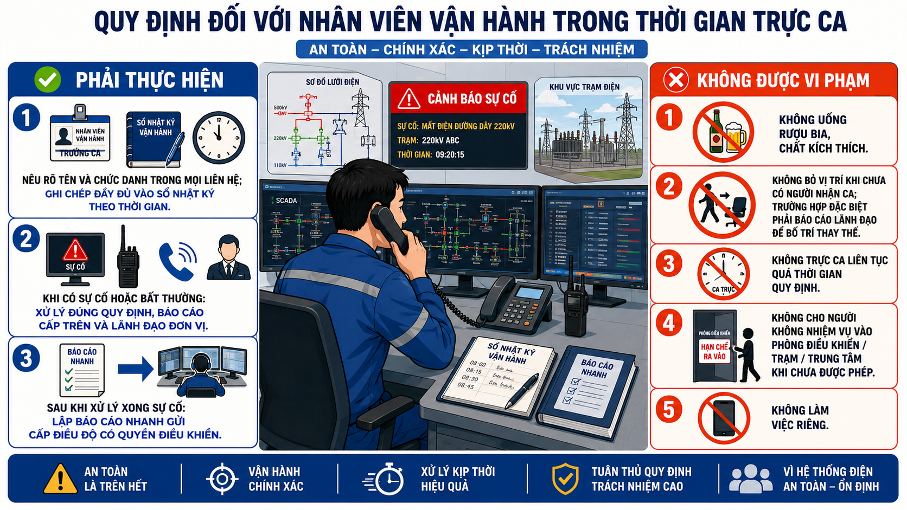

Hình 44: Sơ đồ minh họa (nếu có)
Trả lời:
Quy định đối với nhân viên vận hành trong thời gian trực ca :
a)Nêu rõ tên và chức danh trong mọi liên hệ. Nội dung liên hệ phải được ghi chép đầy đủ vào sổ nhật ký vận hành theo trình tự thời gian;
b)Khi xảy ra sự cố, hiện tượng bất thường trong ca trực của mình, nhân viên vận hành phải thực hiện đúng các quy định tại Quy định quy trình xử lý sự cố trong hệ thống điện quốc gia, Quy định khởi động đen và khôi phục hệ thống điện quốc gia do Bộ Công Thương ban hành và báo cáo những thông tin cần thiết cho nhân viên vận hành cấp trên, lãnh đạo đơn vị;
c)Trường hợp sự cố xảy ra, ngay sau khi xử lý xong sự cố, nhân viên vận hành phải có báo cáo nhanh gửi về cấp điều độ có quyền điều khiển theo quy định tại Quy định quy trình xử lý sự cố trong hệ thống điện quốc gia do Bộ Công Thương ban hành.
a)Uống rượu, bia, sử dụng các chất kích thích khác bị pháp luật nghiêm cấm;
b)Bỏ vị trí công tác khi chưa có nhân viên vận hành thay thế đến nhận ca. Trường hợp đặc biệt có lý do chính đáng và không thể tiếp tục trực ca, nhân viên vận hành trong ca trực phải báo cáo lãnh đạo đơn vị biết để bố trí người khác thay thế;
c)Trực ca liên tục quá thời gian quy định;
d)Cho người không có nhiệm vụ vào phòng điều khiển, nhà máy điện, trạm điện, trung tâm điều khiển khi chưa được phép của lãnh đạo đơn vị;
đ) Làm việc riêng.